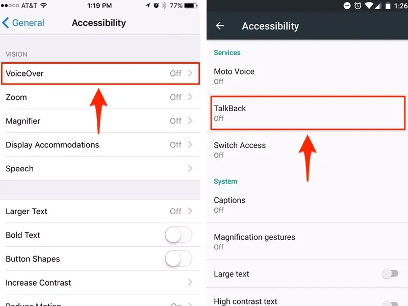
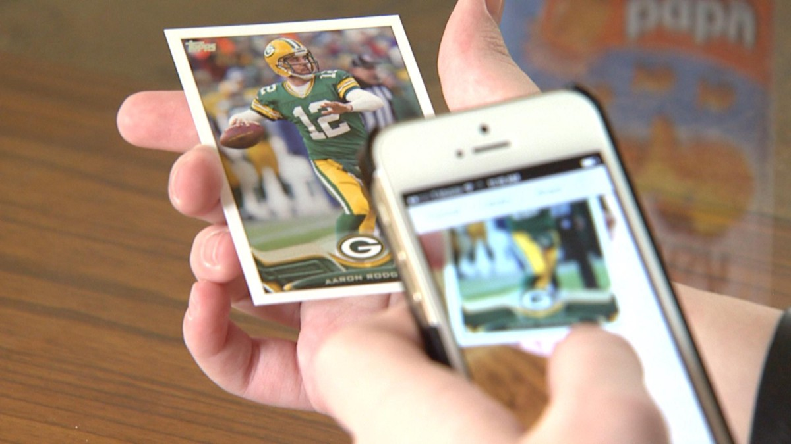

Built In Accessibility Options
The first and foremost function that comes with smartphones nowadays is the built-in accessibility feature. Both Apple and Android devices provide blind users the support they need. On Apple products, VoiceOver is the mentioned feature. This feature reads the content of a smartphone’s screen out loud, along with vibration; allows users to browse apps, open links, type texts and emails, almost everything. Similar feature on Android devices also work pretty much the same way.
Apple's Accessibility Features
Nowadays, VoiceOver is considered one of the best accessibility feature in the market. This technology is available on many Apple device (iPhone, iPad, Mac, Apple Watch, AppleTV, HomePod, iPod touch). VoiceOver is updated to be able to describe people, objects, text, and graphs in greater detail. If users prefer using a physical keyboard, it can be connected wirelessly via Bluetooth (only for Bluetooth keyboard), or via cable on Mac series. Currently, VoiceOver is speaking over 30 languages.
Accessibility Shortcut also supports low vision users by allowing them to easily add, organize, and customize shortcuts for the tools and settings, or add magnifier, text size in order to adjust text size. In addition to all that, Audio Descriptions is one more useful function where blind users can watch movies with detailed audio descriptions of every scene.
Android's Accessibility Features
The built-in technology TalkBack owned by Google, as mentioned before, has very similar functionalities like VoiceOver. However, the feature supports 63 languages, a lot more than VoiceOver. Moreover, users are also able to customize their device with accessibility settings and apps, just like on Apple devices. There are a few interaction controls including Lookout (provide visually impaired or low vision users information about their surroundings), Voice Access (control with spoken commands), Switch Access (interact using switch(es) or keyboard), Action Blocks (customized buttons for routine actions). For audio justification, Sound Amplifier enables users to use wired or Bluetooth headphones to control the sounds in their environment; or Hearing aid support allows users to pair hearing aids to hear more clearly. Many more accessibility features are available on Android Accessibility Suite.
Apps For Blind Users
Seeing AI
Seeing AI is a free app that uses camera to narrate the world around you. Users are able to switch between channels to tune the description of what’s in front of the camera. Here are main functions worth noticing of this app:
- Read the text as soon as it appears in front of the camera, also work with handwritten text
- Provide the beep sound in order to help find the barcodes, then scan them to identify the product.
- Describe the scene around users.
- Describe a person, recognize friends
- Identify currency bills when paying by cash
- Describe the perceived color
Audiobooks
Audiobooks is an app designed for not only blind users but also anyone who prefer reading a book by listening. The app works by paid membership with free trial. Users can easily find a book from various genres and start listening. In addition to that, Audiobooks also provides audio entertainment, such as audio news, magazines, sleep & meditation content. Users can also get access to over 100+ million podcast episodes.
TapTapSee
An app which is specialized in identifying objects. The user takes a picture of what they wanted identified, which the application uses to describe the photographed object. This application combines automatic image recognition systems and the help of real people who interpret the images. This app can be useful, for example, to get a description of the inside of a room inside which the user has never been, find out the color of an item of clothing or distinguish a packet of normal coffee from a decaffeinated one.
